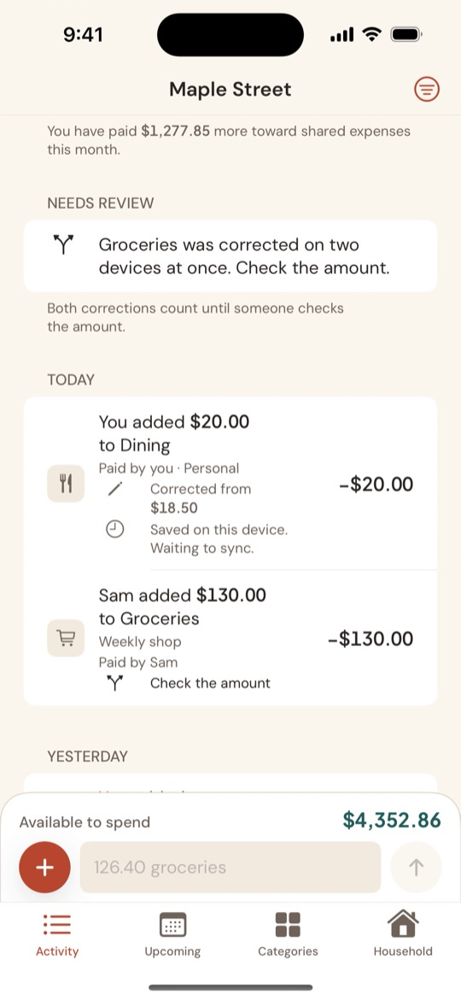
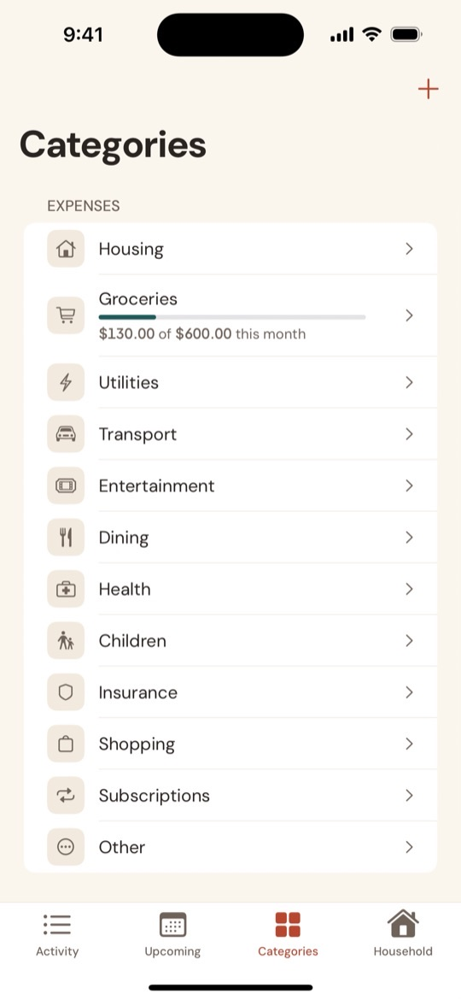
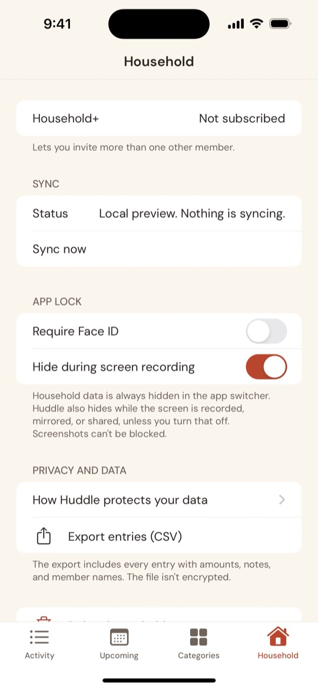

Features
Everything in Huddle serves one loop: add an entry, it syncs, you both see it, you understand where the household stands, and you decide what you can afford.
A household, not an account
The household comes first, not either person. One of you creates it, names it and sets its currency, then invites the other with a link. Every member is equal: anyone can add, change or delete entries. The person who created the household sends invitations and can remove members.
Huddle is designed for couples today. The same model also suits families, flatmates and other households that share money.
Quick entry
Type one line in the bar at the bottom of the Activity tab, such as 126.40 groceries weekly shop or +3000 salary. Huddle works out the amount, whether it's income or an expense, the category, the note and who paid. It shows what it understood ("Expense · $126.40 · Groceries · weekly shop") before you add it.
Prefer a form? Tap + for Add expense or Add income with a date, category, note, who paid and whether it's personal.

The household feed and monthly totals
Everything either of you adds appears in one shared feed, grouped by day, and each entry says who added it: Sam added $130.00 to Groceries. Filter by category or by person.
The top of the feed shows the month's household net, income and expenses, and you can step back through earlier months. Available to spend adds the repeating income and bills still due this month to the month's net.
Sync status is in plain language. If you're offline, an entry says "Saved on this device. Waiting to sync." and goes through when you're back online.

Who paid, without keeping score
Optionally mark who paid for an expense, or that it was personal. The Who paid summary shows the household's spending, each person's share of it, and personal spending separately. It doesn't say who owes whom.
Corrections and history
Amounts are never overwritten. Changing one saves a correction, with an optional reason, and the feed shows Corrected from $18.50. Each entry's history keeps the original amount and every change.
Deleting an entry takes it out of the totals, but you can still find it under Filter → Show deleted entries. If two of you change the same amount at the same time, both changes count and the entry waits under Needs review until one of you taps Keep or enters the right amount.

Repeating entries and Upcoming
Rent, bills and salaries can repeat weekly, fortnightly, monthly or yearly. Huddle adds each one on its date, once, even when your phones are in different time zones. The Upcoming tab shows what's due in the next 30 days and where the month is heading.

Categories and monthly limits
Huddle comes with everyday categories ready to use, such as Housing, Groceries, Utilities and Transport for spending, and Salary for income. Add your own, rename them or archive the ones you don't use. Past entries keep their category.
Give a category a monthly limit to see how much of it the household has used. Progress is shown neutrally, with no warnings in red.

Privacy and your data
- App lock: require Face ID, Touch ID or your passcode, straight away or after 1 or 5 minutes.
- Hidden when you're not looking: Huddle covers its screen in the app switcher and while the screen is recorded or mirrored.
- Encrypted fields: amounts, notes and names are stored as iCloud encrypted fields.
- Export: download every entry as a CSV file.
- Leave or delete: any member can leave; the person who created the household can delete it.

Household+
Huddle is free for two people. Household+ lets the household invite more members, for US$1.99 a month or US$14.99 a year. The household's owner pays, and it's shared through Family Sharing. See pricing
Roadmap
For couples today, for families tomorrow. Here's what's planned after the first release.
- Coming nextSettle up. A 50/50 or custom split that works out who owes whom, built on Who paid.
- Coming nextSafe to spend. One clear number for the rest of the month, including budgets and savings.
- Coming nextNotifications and money moments. Know when your partner adds something, and get calm nudges like "Electricity is due in 3 days."
- Coming nextReceipt photos, with text recognition on your device.
- Coming nextHuddle for Mac.
- LaterShared goals, such as an emergency fund or a holiday.
- LaterCash-flow forecasts and budget suggestions.
- LaterAndroid and web, so everyone in the household can join whatever phone they use.
- LaterFamily mode, with roles for parents, teens and children, and allowances.
Bank connections may come later as an optional extra. Huddle will never need one.